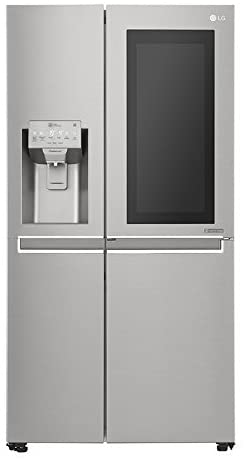
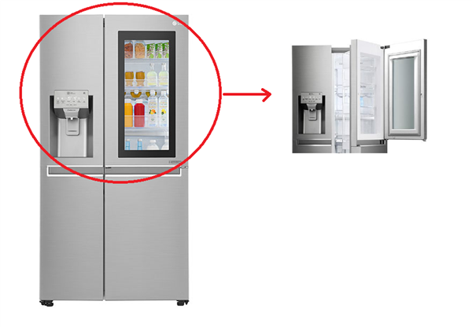

La cocina se podría decir que es un ecosistema tecnológico en sí, ya qué concentra una gran cantidad de dispositivos inteligentes. Tenemos por ejemplo un frigorífico inteligente el cual cuenta con sensor de apertura o sensores de control de su inventario.
Existen otros elementos como el lavavajillas, o el horno y la lavadora los cuales están conectados vía web y se pueden controlar desde fuera de casa. Otro dispositivo interesate es el calentador, el cual se puede programar para activarse en las horas concretas qué exista un mayor ahorro energético.
 